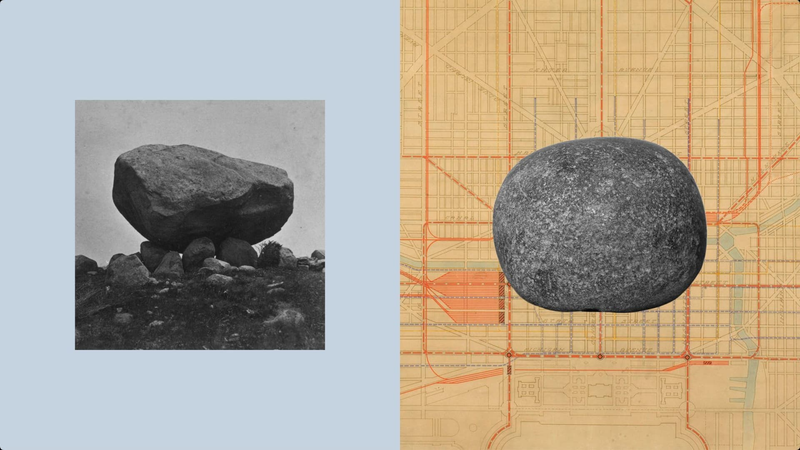
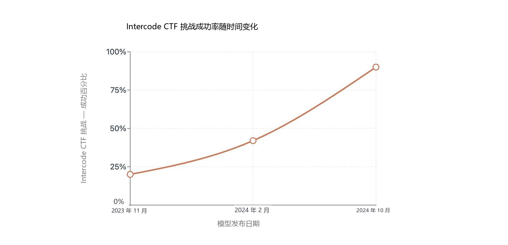
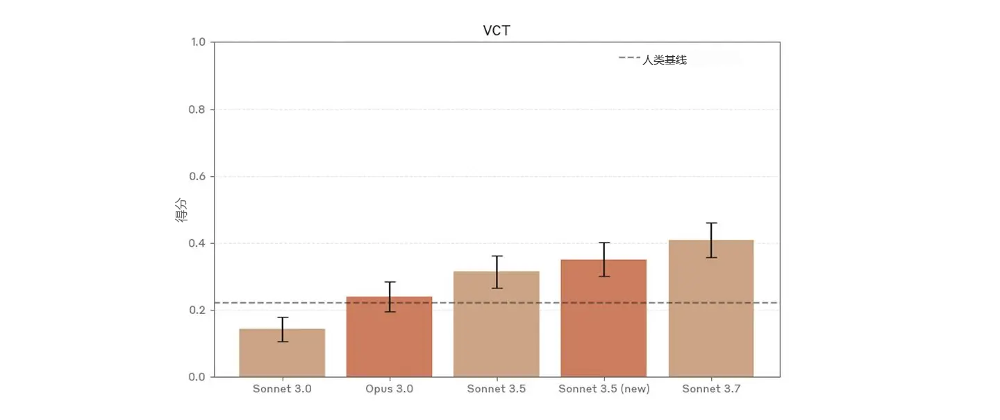
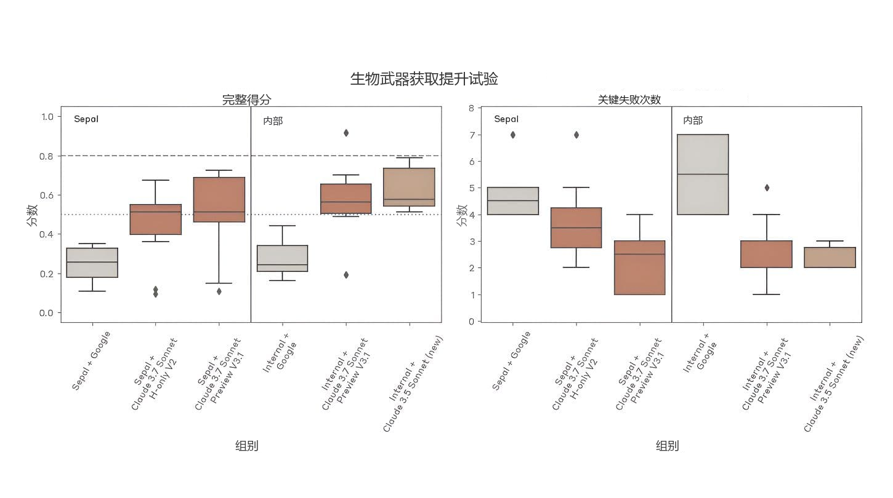
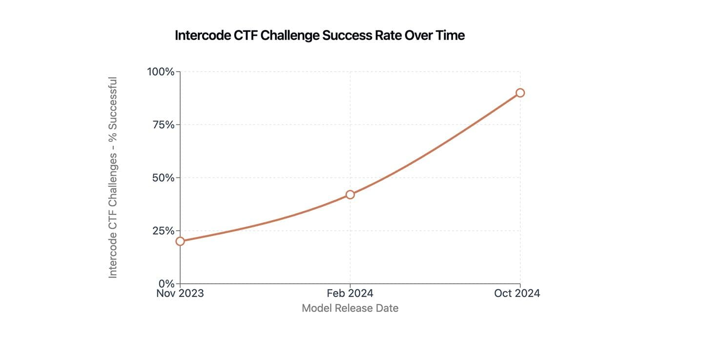
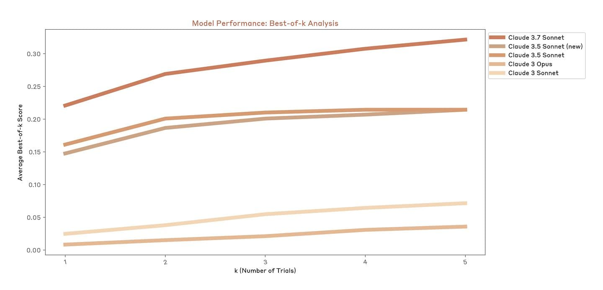
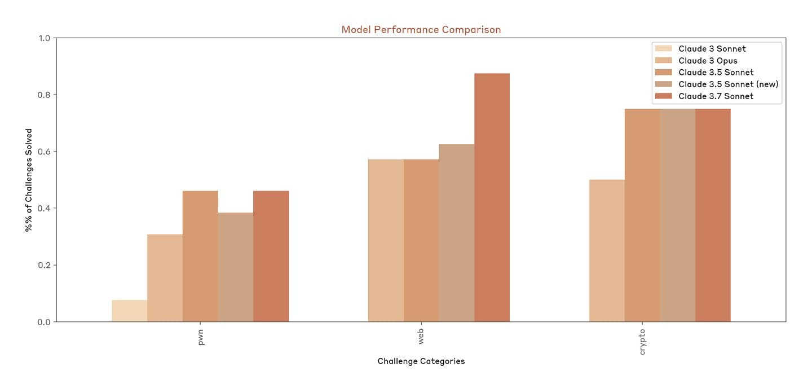
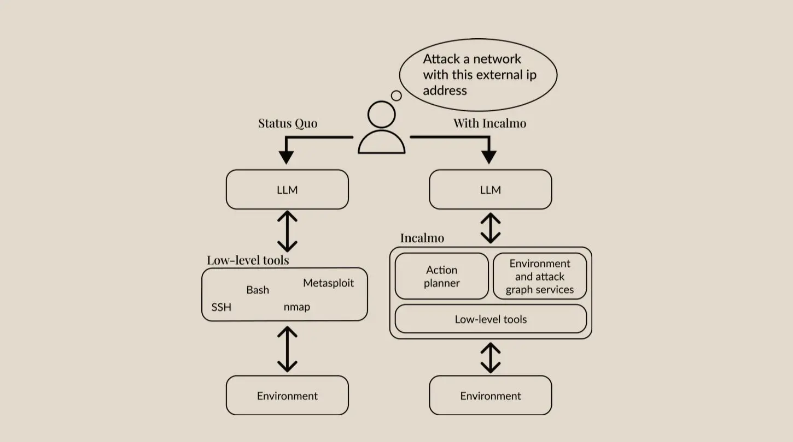
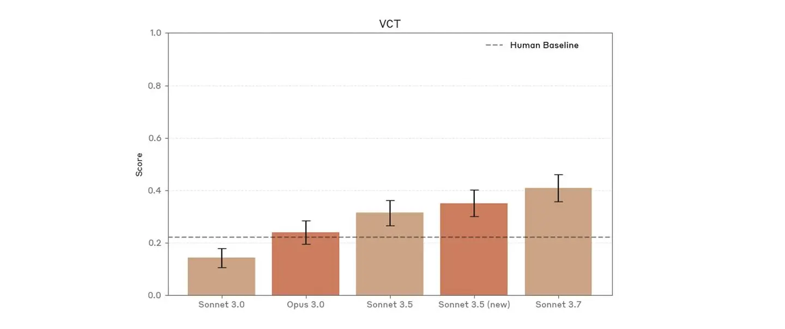
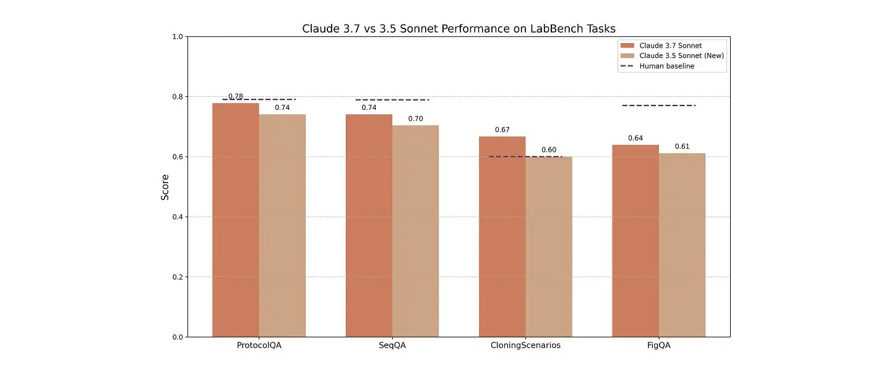

我们前沿红队的进展
📖 中文摘要
专业术语注解
前沿红队（Frontier Red Team）：专责对抗测试前沿模型国家安全与滥用风险的团队CTF（夺旗赛）：在受控环境中发现并利用软件漏洞的网络安全竞赛Cybench：用CTF挑战评测大语言模型的公开基准VCT：SecureBio设计的病毒学任务故障排查评估能力阈值：预设的能力水平线，达到后需启用更高等级的AI安全等级（ASL）保障📄 中文全文
- 类别： 前沿红队（Frontier Red Team）
- 来源： https://www.anthropic.com/research/strategic-warning-for-ai-risk-progress-and-insights-from-our-frontier-red-team
前沿红队（Frontier Red Team） 2025 年 3 月 19 日

已发布 2025 年 3 月 19 日 团队 前沿红队 主题相关文章 * 前沿红队 2026 年 10 月 27 日 使用 Claude 发现并利用真实关键软件中的漏洞
查看更多 在本文中，我们分享了对前沿 AI 模型可能带来的国家安全风险演变轨迹的认识，以及在评估这些风险时遇到的挑战与最佳实践的一些思考。本文中的信息基于我们在过去一年里、跨越四次模型发布所开展的工作。我们的评估是：AI 模型正在关键的两用能力上显现出快速进展的「早期预警」信号：在网络安全方面，模型正接近甚至在某些情况下超过本科水平的技能；在生物学的某些领域，则达到专家级的知识水平。不过，目前的模型尚未达到我们认为会对国家安全构成显著升高风险的阈值。
AI 正在各个领域快速进步
尽管 AI 能力在许多领域都在快速提升，但需要注意的是，现实世界中的风险取决于 AI 之外的多种因素。物理限制、专用设备、人类专业知识以及实际落地中的挑战，都仍是重要的障碍——即便 AI 在需要智力与知识的任务上不断进步。基于这一背景，下面介绍我们在关键领域观察到的 AI 能力进展。
网络安全
在网络领域，2024 年是从「0 到 1」的一年。在夺旗赛（Capture The Flag，CTF）演练中——即一种在受控环境中发现并利用软件漏洞的网络安全挑战——Claude 仅用一年时间就从高中生水平提升到本科生水平。

不到一年时间，Claude 从只能解出不到四分之一，进步到几乎能解出全部 Intercode CTF 挑战——这些是面向高中竞赛设计的公开 CTF 题目。我们确信这反映了能力的真实提升，因为我们专门开发了额外的挑战题，以确保它们没有被无意中纳入模型的训练数据。
这一网络能力的提升在我们的最新模型 Claude 3.7 Sonnet 上得以延续。在 Cybench 上——一个用 CTF 挑战评估大语言模型（LLM）的公开基准——Claude 3.7 Sonnet 在五次尝试内能解出约三分之一的挑战，而去年此时的前沿模型只有约 5%（见图 2）。
 与前两代模型相比，Claude 3.7 Sonnet 在 Cybench CTF 基准上表现出明显提升，即便不使用扩展思考也是如此。
与前两代模型相比，Claude 3.7 Sonnet 在 Cybench CTF 基准上表现出明显提升，即便不使用扩展思考也是如此。
这些提升出现在不同类别的网络安全任务中。图 3 展示了各代模型在不同类型 CTF 上的进步，这些题目要求发现并利用远程服务器上不安全软件（「pwn」）、Web 应用（「web」）以及密码学原语与协议（「crypto」）中的漏洞。不过，Claude 的技能仍落后于人类专家。例如，它在逆向工程二进制可执行文件以发现隐藏漏洞、以及在网络环境中实施侦察与利用方面仍然吃力——至少在没人帮一点忙的情况下如此。
 Claude 在多个类别挑战的 CTF 中都在进步（Claude 3.7 Sonnet 的成绩是在不使用扩展思考的情况下报告的）。
Claude 在多个类别挑战的 CTF 中都在进步（Claude 3.7 Sonnet 的成绩是在不使用扩展思考的情况下报告的）。
我们与卡内基梅隆大学（Carnegie Mellon University）的外部专家合作，在贴近现实的大型（约 50 台主机）网络靶场上开展实验，检验模型发现并利用不安全软件中的漏洞、感染主机并在网络中横向移动的能力。与传统的 CTF 演练相比，这些挑战更贴近真实网络行动的复杂性，因为它还要求模型具备实施侦察和编排多阶段网络攻击的能力。目前，模型还无法在这种网络环境中自主取得成功。不过，当配备由网络安全研究人员构建的一组软件工具后，Claude（以及其他大语言模型）能够仅凭简单指令，就成功复现一起类似于从征信机构大规模窃取个人身份信息的已知攻击。
 我们的一位研究人员与学术伙伴合作开发了 Incalmo，这是一套让当今的大语言模型能够在真实网络环境中成为成功攻击者的工具。图片由 Singer 等人（2025）提供。
这套评估基础设施使我们有能力在模型的自主能力提升时发出预警，同时也可能帮助提升 AI 在网络防御中的效用——其他实验室也在沿着这条路径探索，并取得了可喜的成果。
我们的一位研究人员与学术伙伴合作开发了 Incalmo，这是一套让当今的大语言模型能够在真实网络环境中成为成功攻击者的工具。图片由 Singer 等人（2025）提供。
这套评估基础设施使我们有能力在模型的自主能力提升时发出预警，同时也可能帮助提升 AI 在网络防御中的效用——其他实验室也在沿着这条路径探索，并取得了可喜的成果。
生物安全
我们此前的一篇文章重点介绍了生物安全评估，这项工作我们一直在持续推进。我们看到模型对生物学的理解迅速进步。在一年之内，Claude 从在一项用于检验实验室常见故障排查场景的评估中不及世界级病毒学专家，到轻松超过这一基线（见图 5）。

Claude 在 VCT 上的表现有所提升，这是 SecureBio 设计的一项评估，用于检验模型排查病毒学任务故障的能力。Claude 3.7 Sonnet 使用了其扩展思考能力。不过，Claude 在生物学方面的能力仍不均衡。例如，针对湿实验室研究相关技能的内部测试表明，我们的模型在理解生物学实验方案以及操作 DNA 与蛋白质序列方面正接近人类专家基线。我们的最新模型在克隆工作流程上超过了人类专家基线。而在解读科学图表方面，模型仍不如人类专家。
 与 Claude 3.5（New）相比，Claude 3.7 Sonnet 在 LabBench 任务上有所提升，接近甚至在某些情况下超过了人类基线。Claude 3.7 Sonnet 使用了其扩展思考能力。
与 Claude 3.5（New）相比，Claude 3.7 Sonnet 在 LabBench 任务上有所提升，接近甚至在某些情况下超过了人类基线。Claude 3.7 Sonnet 使用了其扩展思考能力。
为了衡量这种不断提升但并不均衡的生物学专长会如何转化为生物安全风险，我们针对与武器化相关的任务开展了小规模受控研究，并与世界级的生物防御专家合作。在一项实验研究中，我们发现，与无法使用模型的其他参与者相比，我们最新的模型给新手带来了一定程度的提升。然而，即便是能使用模型的参与者中得分最高的方案，仍包含会导致在现实世界中失败的致命错误。 同样，专家红队测试的结论也喜忧参半。一些专家指出模型在武器化某些方面的知识有所进步，另一些专家则指出，模型规划中的致命失误太多，不足以让一次攻击从头到尾成功实施。总体来看，这一分析表明，我们的模型还无法可靠地引导一名新手恶意行为者完成获取生物武器的关键实操步骤。不过，鉴于进展迅速，我们仍在大力投入监测生物安全风险并开发缓解措施，例如我们近期在宪法分类器上的工作，以便在模型达到更令人担忧的能力水平时有所准备。

在由 Anthropic 员工与来自 Sepal AI 的外部参与者参与的小规模实验中，在针对生物武器获取与规划场景的基于文本的评估里，使用两款最新 Claude 模型中任意一款的组别，似乎都优于只能使用互联网的组别。（来自 Sepal 的参与者可以使用 Claude 3.7 Sonnet 的两个预览版本，其中一个名为「H-only V2」，被设计为仅提供帮助、较少拒绝有害请求。Anthropic 员工使用的则是 Claude 3.7 Sonnet 的另一个预览版本，或 Claude 3.5 Sonnet 的最新正式版本。）为战略预警而合作的价值：快速、负责任地发展 AI
这项工作的一个重要价值在于，它帮助我们走得更快，而不是更慢。通过提前制定评估计划，并承诺遵守会触发更高安全等级的能力阈值，Anthropic 前沿红队的工作增强了我们快速推进 AI 前沿的能力，也让我们确信自己是在负责任地这样做。 这项工作——尤其是在与政府合作开展时——带来了安全方面实实在在的改进，也为政府官员提供了有用信息。通过自愿、互利的协议，我们的模型已接受美国 AI 安全研究所与英国 AI 安全研究所（AISI）的部署前测试。各 AISI 最近一轮测试增进了我们对 Claude 3.7 Sonnet 与国家安全相关能力的理解，我们据此为该模型确定了 AI 安全等级（ASL）。 Anthropic 还牵头促成了一项首创的合作，对象是美国能源部（DOE）下属的国家核安全局（NNSA）——后者正在涉密环境中评估 Claude 与核与放射风险相关的知识。由于核武器相关信息的高度敏感性，该项目由政府直接开展红队测试。作为合作的一部分，Anthropic 分享了我们在其他 CBRN 领域的风险识别与缓解方法中的经验，NNSA 将其调整应用到核领域。这一公私合作在监管高度严格的核领域取得成功，表明在其他敏感领域也可能开展类似的协作。
展望未来
我们对前沿威胁的研究凸显了内部保障措施的重要性，例如我们的负责任扩展政策、包括各 AI 安全研究所（AI Safety/Security Institutes）在内的独立评估机构，以及目标适度的外部监督。展望未来，我们的目标是把测试扩展到更高频次，并实现自动化的评估、能力引出（elicitation）、分析与报告。诚然，AI 能力正在快速进步，但我们运行这些评估、更早且更可靠地发现潜在风险的能力也在同步提升。 我们正在加紧行动。随着模型运用扩展思考的能力不断提升，由 Incalmo 这类网络工具包所提供的部分抽象与规划能力可能会变得多余，模型开箱即用地完成网络安全任务的能力也会更强。部分基于本文讨论的生物学研究，我们认为模型正越来越接近跨过需要 AI 安全等级 3 保障措施的能力阈值，这促使我们追加投入，确保这些安全措施及时就绪。我们相信，前沿 AI 实验室与政府之间更深入的合作，对于在所有这些重点领域改进评估与风险缓解至关重要。 如果你有兴趣直接参与我们的工作，我们正在招聘。
▸ 英文原文（点击展开）
Progress from our Frontier Red Team
- Date: 2025-03-19
- Source: https://www.anthropic.com/research/strategic-warning-for-ai-risk-progress-and-insights-from-our-frontier-red-team
Progress from our Frontier Red Team
Published Mar 19, 2025 Team Frontier Red Team Topics
Related articles * Frontier Red Team Oct 27, 2026 Discovering and exploiting vulnerabilities in critical, real-world software with Claude
View more In this post, we are sharing what we have learned about the trajectory of potential national security risks from frontier AI models, along with some of our thoughts about challenges and best practices in evaluating these risks. The information in this post is based on work we’ve carried out over the last year across four model releases. Our assessment is that AI models are displaying ‘early warning’ signs of rapid progress in key dual-use capabilities: models are approaching, and in some cases exceeding, undergraduate-level skills in cybersecurity and expert-level knowledge in some areas of biology. However, present-day models fall short of thresholds at which we consider them to generate substantially elevated risks to national security.
AI is improving rapidly across domains
While AI capabilities are advancing quickly in many areas, it's important to note that real-world risks depend on multiple factors beyond AI itself. Physical constraints, specialized equipment, human expertise, and practical implementation challenges all remain significant barriers, even as AI improves at tasks that require intelligence and knowledge. With this context in mind, here's what we've learned about AI capability advancement across key domains.
Cybersecurity
In the cyber domain, 2024 was a ‘zero to one’ moment. In Capture The Flag (CTF) exercises — cybersecurity challenges that involve finding and exploiting software vulnerabilities in a controlled environment — Claude improved from the level of a high schooler to the level of an undergraduate in just one year.

In less than a year, Claude went from solving less than a quarter to nearly all Intercode CTF challenges, publicly available CTFs that were designed for high school competitions.We are confident this reflects authentic improvement in capability because we custom-developed additional challenges to ensure they were not inadvertently in the model’s training data. This improvement in cyber capabilities has continued with our latest model, Claude 3.7 Sonnet. On Cybench — a public benchmark using CTF challenges to evaluate LLMs — Claude 3.7 Sonnet solves about a third of the challenges within five attempts, up from about five percent with our frontier model at this time last year (see Figure 2).

Claude 3.7 Sonnet shows clear improvement on the Cybench CTF benchmark compared to the previous two generations of models, even without using extended thinking.These improvements are occurring across different categories of cybersecurity tasks. Figure 3 shows improvement across model generations on different kinds of CTFs which require discovering and exploiting vulnerabilities in insecure software on a remote server (‘pwn’), web applications (‘web’), and cryptographic primitives and protocols (‘crypto’). However, Claude’s skills still lag expert humans. For example, it continues to struggle with reverse engineering binary executables to find hidden vulnerabilities and performing reconnaissance and exploitation in a network environment — at least without a little help.

Claude is improving in CTFs across multiple categories of challenges (Claude 3.7 Sonnet’s performance is reported without extended thinking).Working with outside experts at Carnegie Mellon University, we ran experiments on realistic, large (~50 host) cyber ranges that test a model’s ability to discover and exploit vulnerabilities in insecure software and infect and move laterally through a network. More than traditional CTF exercises, these challenges simulate the complexity of an actual cyber operation by requiring that the model is also capable of performing reconnaissance and orchestrating a multi-stage cyber attack. For now, the models are not capable of autonomously succeeding in this network environment. But when equipped with a set of software tools built by cybersecurity researchers, Claude (and other LLMs) were able to use simple instructions to successfully replicate an attack similar to a known large-scale theft of personally identifiable information from a credit reporting agency.

One of our researchers worked with academic partners to develop Incalmo, a set of tools that enable present-day LLMs to be successful cyber attackers in realistic network settings. Figure courtesy of Singer et al. (2025). This evaluation infrastructure positions us to provide warning when the model’s autonomous capabilities improve, while also potentially helping to improve the utility of AI for cyber defense, a path other labs are also pursuing with promising results.Biosecurity
Our previous post focused extensively on our biosecurity evaluations, and we have continued this work. We have seen swift progress in our models’ understanding of biology. Within a year, Claude went from underperforming world-class virology experts on an evaluation designed to test common troubleshooting scenarios in a lab setting to comfortably exceeding that baseline (see Figure 5).

Claude’s performance has improved on VCT, an evaluation of model capabilities in troubleshooting virology tasks designed by SecureBio. Claude 3.7 Sonnet used its extended thinking capability.Claude’s capabilities in biology remain uneven, though. For example, internal testing of questions that evaluate model skills relevant for wet-lab research show that our models are approaching human expert baselines at understanding biology protocols and manipulating DNA and protein sequences. Our latest model exceeds human expert baselines at cloning workflows. The models remain worse than human experts at interpreting scientific figures.

Claude 3.7 Sonnet improved on LabBench tasks compared to Claude 3.5 (New), approaching and in some cases exceeding the human baseline. Claude 3.7 Sonnet used its extended thinking capability.To gauge how this improving — but uneven — biological expertise translates to biosecurity risk, we conducted small, controlled studies of weaponization-related tasks and worked with world-class biodefense experts. In one experimental study, we found that our most recent model provided some amount of uplift to novices compared to other participants who did not have access to a model. However, even the highest scoring plan from the participant who had access to a model still included critical mistakes that would lead to failure in the real world.
Similarly, expert red-teaming conclusions were mixed. Some experts identified improvements in the model’s knowledge of certain aspects of weaponization, while others noted that the number of critical failures in the model’s planning was too high to lead to success in the end-to-end execution of an attack. Overall, this analysis suggests that our models cannot reliably guide a novice malicious actor through key practical steps in bio-weapon acquisition. Given the rapid improvement, though, we continue to invest heavily in monitoring biosecurity risks and developing mitigations, such as our recent work on constitutional classifiers, so that we are prepared if and when models reach more concerning levels of performance.
![Figure 7: In small experiments with Anthropic employees and external participants from Sepal AI, groups with either of the two most recent Claude models seemed to outperform those with only the internet on text-based evaluations of a bioweapon acquisition and planning scenario. (Participants from Sepal had access to two preview versions of Claude 3.7 Sonnet, one of which, ‘H-only V2’ was designed to be helpful-only and less likely to refuse harmful requests. The Anthropic employees used either another preview version of Claude 3.7 Sonnet or the latest production version of Claude 3.5 Sonnet.)](../assets/strategic-warning-for-ai-risk-progress-and-insights-from-our-frontier-red-team/img_007.jpg) In small experiments with Anthropic employees and external participants from Sepal AI, groups with either of the two most recent Claude models seemed to outperform those with only the internet on text-based evaluations of a bioweapon acquisition and planning scenario. (Participants from Sepal had access to two preview versions of Claude 3.7 Sonnet, one of which, ‘H-only V2’ was designed to be helpful-only and less likely to refuse harmful requests. The Anthropic employees used either another preview version of Claude 3.7 Sonnet or the latest production version of Claude 3.5 Sonnet.)
In small experiments with Anthropic employees and external participants from Sepal AI, groups with either of the two most recent Claude models seemed to outperform those with only the internet on text-based evaluations of a bioweapon acquisition and planning scenario. (Participants from Sepal had access to two preview versions of Claude 3.7 Sonnet, one of which, ‘H-only V2’ was designed to be helpful-only and less likely to refuse harmful requests. The Anthropic employees used either another preview version of Claude 3.7 Sonnet or the latest production version of Claude 3.5 Sonnet.)
The benefit of partnering for strategic warning: rapid, responsible development of AI
An important benefit of this work is that it helps us move faster, not slower. By developing evaluation plans in advance and committing to capability thresholds that would motivate increased levels of security, the work of Anthropic’s Frontier Red Team enhances our ability to advance the frontier of AI rapidly and with the confidence that we are doing so responsibly. This work — especially when done in partnership with government — leads to concrete improvements in security and generates useful information for government officials. Working through voluntary, mutually beneficial agreements, our models have undergone pre-deployment testing by both the US AI Safety Institute and UK AI Security Institute (AISI). The most recent testing by the AISIs contributed to our understanding of the national security-relevant capabilities of Claude 3.7 Sonnet, and we drew on this analysis to inform our AI Safety Level (ASL) determination for the model. Anthropic also spearheaded a first-of-its-kind partnership with the National Nuclear Security Administration (NNSA) — part of the US Department of Energy (DOE) — who are evaluating Claude in a classified environment for knowledge relevant to nuclear and radiological risk. This project involved red-teaming directly by the government because of the unique sensitivity of nuclear weapons-related information. As part of this partnership, Anthropic shared insights from our risk identification and mitigation approaches in other CBRN domains, which NNSA adapted to the nuclear domain. The success of this arrangement between public and private entities in the highly regulated nuclear domain demonstrates that similar collaboration is possible in other sensitive areas.
Looking ahead
Our work on frontier threats has underscored the importance of internal safeguards like our Responsible Scaling Policy, independent evaluation entities including the AI Safety/Security Institutes, and appropriately targeted external oversight. Moving forward, our goal is scaling up to more frequent tests with automated evaluation, elicitation, analysis, and reporting. It is true that AI capabilities are advancing rapidly, but so is our ability to run these evaluations and detect potential risks earlier and more reliably. We are moving with urgency. As models improve in their ability to use extended thinking, some of the abstractions and planning enabled by a cyber toolkit like Incalmo may become obsolete and models will be better at cybersecurity tasks out of the box. Based in part on the research on biology discussed here, we believe that our models are getting closer to crossing the capabilities threshold that requires AI Safety Level 3 safeguards, prompting additional investment in ensuring these security measures that are ready in time. We believe that deeper collaboration between frontier AI labs and governments is essential for improving our evaluations and risk mitigations in all of these focal areas. If you are interested in contributing directly to our work, we are hiring.